Magnetic and Thermal Properties
The origin and types of magnetism, domains and hysteresis, superconductivity, and the thermal properties: heat capacity, thermal expansion, thermal conductivity, thermal stress and thermal shock.
Central idea: every magnetic property comes from the magnetic moments of electrons, and the type of magnetism depends on whether those moments exist in the atom, whether they are permanent, and how neighbouring moments are arranged: induced and opposite (diamagnetic), permanent and random (paramagnetic), parallel (ferromagnetic), antiparallel and equal (antiferromagnetic) or antiparallel and unequal (ferrimagnetic). In the ferromagnetic and ferrimagnetic materials the moments group into domains, and the motion of the domain walls sets the shape of the hysteresis loop, so a material is a soft magnet or a hard one. The thermal properties follow from what heat does to the lattice: it raises the vibrational energy (heat capacity), it increases the mean interatomic distance (thermal expansion), it is carried by electrons and phonons (thermal conductivity), and when expansion is restrained or uneven it creates stresses (thermal stress and thermal shock).
This page follows the single official session of Topic 7 (Session 15) slide by slide. Part I covers the magnetic properties (Slides 1 to 32) and Part II the thermal properties (Slides 33 to 48). Every section names the slides it comes from. Figures that appear on the slides are copied from them as PNG crops, and each caption names its slide; the two drawings that are not on the slides (the asymmetric potential well and the thermal-shock stress profile) are extensions and their captions say so. Anything that is not printed on the slides is marked as an extension. The photographs of the slides (uses of magnets, levitation, trains, thermocouples) are not reproduced. Problems 11 and 12 of the sheet Problems T6andT7 are the magnetic problems of this topic, and they are solved on the problems page of this topic.
Part I — Magnetic Properties (Session 15, Slides 1–32)
§ 1 Uses and overview [Session 15 Slides 1-2]
Slide 1 is the title and the agenda of the magnetic part: introduction, basic concepts, types of magnetism, magnetic domains, hysteresis cycles, and superconductivity and magnetism. Slide 2 lists the uses of magnetic materials with pictures: the compass, ferrofluids, permanent magnets, and the magnetic coverings used in stealth technologies.
§ 2 Origin of the magnetic behaviour [Session 15 Slide 3]
Magnetism is the phenomenon by which materials induce forces of attraction or repulsion over other materials, and it has its origin in the movement of electrically charged particles [Session 15 Slide 3]. The macroscopic magnetic properties of a material are a consequence of the magnetic moments associated with its individual electrons. Each electron has two contributions:
- Orbital magnetic moment $= m_l\,\mu_B$, from its motion around the nucleus.
- Spin magnetic moment $= \pm\mu_B$, from its spin (two possible directions).
Here $m_l$ is the magnetic quantum number of the electron (the slide writes "magnetic quantum moment") and $\mu_B$ is the Bohr magneton:
The magnetic moment of an atom is the sum of the magnetic moments of all its electrons. If the net moment of the atom is not null, the atom behaves like a magnetic dipole. The slide tabulates the moment of the 3d transition elements from the electronic structure of their 3d shell, which counts its unpaired spins (the 4s electrons are not counted, and the moment of an atom is not the moment per atom of the solid metal: compare Fe, Co and Ni here with the values of Section 4.3):
| Element | Sc | Ti | V | Cr | Mn | Fe | Co | Ni | Cu |
|---|---|---|---|---|---|---|---|---|---|
| Atomic number | 21 | 22 | 23 | 24 | 25 | 26 | 27 | 28 | 29 |
| Moment in $\mu_B$ | 1 | 2 | 3 | 5 | 5 | 4 | 3 | 2 | 0 |
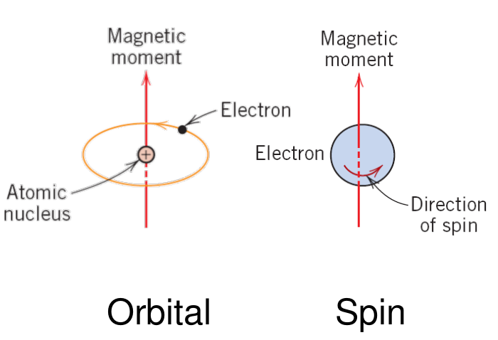
The slide gives only the value of $\mu_B$. The definition $\mu_B = e\hbar/2m_e$ is an extension, and it reproduces the value above.
§ 3 Basic concepts: field, induction, magnetization [Session 15 Slide 4]
Slide 4 defines the quantities of the magnetic response of a material in SI units. Some later slides also print other units: gauss (Slide 23), emu/cm³ and Oe (Slide 24), cal (Slides 35 and 41) and Btu (Slide 43).
- $H$ is the magnetic field strength, in A/m.
- $B$ is the magnetic induction, also called magnetic flux density (the slides also write "inductance"), in Wb/m² or tesla.
- $\mu$ is the permeability of the medium through which $H$ passes and in which $B$ is measured, in H/m (or Wb/(A·m)).
- $M$ is the magnetization (the magnetic moment per unit volume), in A/m.
- $\chi_m$ is the magnetic susceptibility (dimensionless).
The relative permeability $\mu_r$ is the ratio of the permeability of the material to that of vacuum. Substituting $M = \chi_m H$ in $B = \mu_0 H + \mu_0 M$ gives $B = \mu_0 (1 + \chi_m) H$, and comparing with $B = \mu_r\mu_0 H$,
(derived here from the two printed relations). The figure of the slide plots the induction against the field: in vacuum $B = \mu_0 H$, and in a material the line differs by the term $\mu_0 M$, which is the contribution of the material (higher for $M > 0$, lower for the diamagnetic $M < 0$).
$[\mu_0 H] = (\text{H/m})(\text{A/m}) = \text{V}\cdot\text{s/m}^2 = \text{T}$, the unit of $B$. $\chi_m$ and $\mu_r$ have no units, because $M$ and $H$ are both in A/m.
§ 4 Types of magnetism [Session 15 Slides 5-13]
Slide 5 gives the overview. Materials are grouped by the value of $\mu_r$: the ferromagnetic and ferrimagnetic ones have $\mu_r \gg 1$ and $\chi \approx 10^5$ to $10^6$, while the paramagnetic and diamagnetic ones have $\mu_r$ close to 1 and a susceptibility of about $10^{-5}$ in absolute value. The antiferromagnetic materials are non-magnetizable. The chart of the slide plots the induction against the applied field with the line of vacuum ($\chi = 0$) as reference [Session 15 Slide 5]:
- (1) Diamagnetic ($\chi \sim -10^{-5}$): Al₂O₃, Cu, Au, Si, Ag, Zn. The line lies below that of vacuum.
- (2) Paramagnetic: Al, Cr, Mo, Na, Ti, Zr. The line lies slightly above that of vacuum.
- (3) Ferromagnetic and ferrimagnetic ($\chi$ as large as $10^6$): Fe₃O₄, NiFe₂O₄, ferrite ($\alpha$), Co, Ni, Gd. The line is far above, with $B \cong \mu_0 M$ for $H \ll M$.
The text of Slide 5 writes the diamagnetic susceptibility as $\chi \approx 10^{-5}$ without the sign, while the chart on the same slide and Slide 6 give $\chi_m < 0$. The sign is negative.
Cr is listed as paramagnetic on Slide 5 and as antiferromagnetic on Slide 10. Slide 23 resolves it: its Néel temperature is 310 K, so it is antiferromagnetic below 310 K and paramagnetic above. By the same table MnO (116 K) and α-Mn (100 K) are paramagnetic at room temperature (this reading is an extension).
4.1 Diamagnetism [Session 15 Slides 6-7]
In a diamagnetic material there are no dipoles in the absence of an external field. In the presence of a field, dipoles are induced that are aligned opposite to the field direction. The external field induces a change in the speed of the orbital movement of the electrons, so the effect is not permanent: it exists only while the field is applied. The induced moment is very small and opposite to the applied field [Session 15 Slide 6]:
where $B_0 = \mu_0 H$ is the induction in vacuum.
Examples on the slide: gold, silver and copper.
Slide 7 is titled "The frog incident" and only prints the link of a video (listed at the end of Part I). The slide does not describe it. The title points to the well-known demonstration of the diamagnetic levitation of a living frog in a very strong magnetic field; this reading is outside the slide.
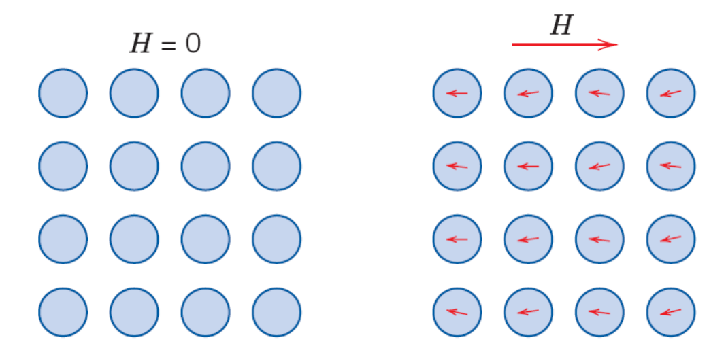
4.2 Paramagnetism [Session 15 Slide 8]
A paramagnetic material has atoms with permanent magnetic dipoles that are randomly oriented, so the material has no permanent net magnetization. When an external field is applied the dipoles turn and align with its direction. The induced field is relatively small and its effect is added to the applied field [Session 15 Slide 8]:
Examples on the slide: aluminium and titanium.
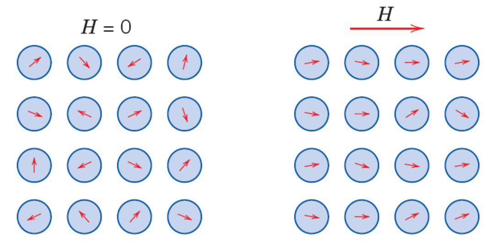
4.3 Ferromagnetism [Session 15 Slide 9]
A ferromagnetic material has magnetic dipoles permanently oriented (parallel) in the absence of an external field, so it shows a large permanent magnetization (within each domain: Section 5 explains why a piece that was never magnetized has no net magnetization). The slide states that the permanent magnetic moment of ferromagnetic materials is due fundamentally to the spin magnetic moments, with a small contribution from the orbital moments [Session 15 Slide 9]. The susceptibility is very large, up to $10^6$:
The slide tabulates the magnetic moment at 0 K of the ferromagnetic metals:
| Metal | Fe | Co | Ni | Gd |
|---|---|---|---|---|
| Magnetic moment in $\mu_B$ | 2.22 | 1.72 | 0.60 | 7.12 |
The examples of the slide are iron, nickel and cobalt; gadolinium appears in this table and in the table of Curie temperatures (Section 9).
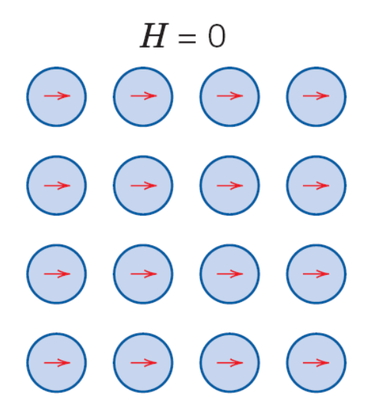
4.4 Antiferromagnetism [Session 15 Slide 10]
In an antiferromagnetic material the permanent magnetic dipoles are oriented in an antiparallel way, so the solid as a whole has no net magnetic moment. The examples are Cr, Mn and MnO. The slide shows the antiparallel alignment of the spin moments of the Mn²⁺ ions in manganese oxide, with the O²⁻ ions in between [Session 15 Slide 10].
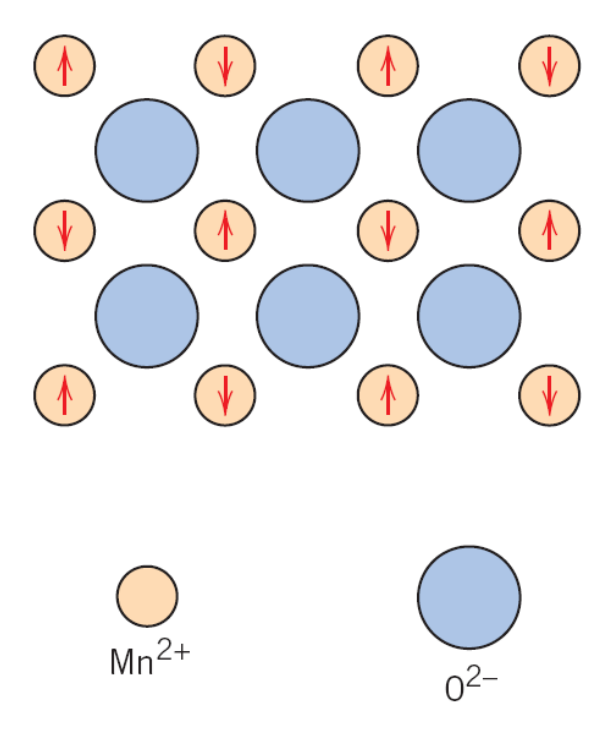
4.5 Ferrimagnetism [Session 15 Slides 11-12]
Ferrimagnetism is present in ceramic materials with permanent dipoles of different intensity aligned in an antiparallel way, so a net moment remains. The ferrimagnetic ceramics are the ferrites (compounds of formula AB₂O₄), the garnets (M₃Fe₅O₁₂) and the compounds AB₁₂O₁₉ [Session 15 Slide 11]. The slide shows the arrangement of the cations in the oxygen lattice (Fe²⁺ and Fe³⁺ in octahedral sites, Fe³⁺ in tetrahedral sites) and the net spin magnetic moment of each cation:
| Cation | Fe³⁺ | Fe²⁺ | Mn²⁺ | Co²⁺ | Ni²⁺ | Cu²⁺ |
|---|---|---|---|---|---|---|
| Net spin moment in $\mu_B$ | 5 | 4 | 5 | 3 | 2 | 1 |
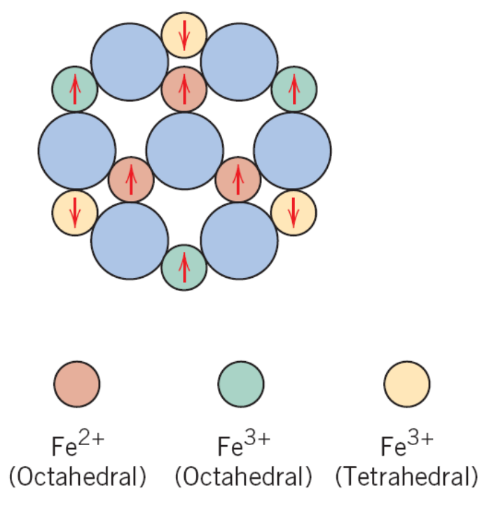
Magnetite, Fe₃O₄ (extension, built from the table above). Magnetite is the ferrite Fe³⁺(Fe²⁺Fe³⁺)O₄: one Fe³⁺ ion in a tetrahedral site and one Fe²⁺ and one Fe³⁺ ion in octahedral sites per formula unit. The two Fe³⁺ moments are antiparallel and cancel, $5\,\mu_B - 5\,\mu_B = 0$, so the net moment per formula unit is that of the Fe²⁺ ion, $4\,\mu_B$.
Slide 12 lists commercial ferrite compositions (MgFe₂O₄, Mg-Zn, MnFe₂O₄, Mn-Fe, Mn-Zn, NiFe₂O₄ and the lithium ferrite) and commercial garnet compositions (yttrium iron garnet Y₃Fe₅O₁₂ and its aluminium, chromium, lanthanum and praseodymium variants), with the comments on which site each substituting ion prefers.
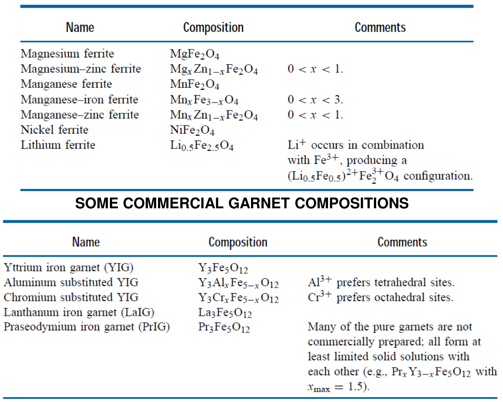
4.6 Summary of the types of magnetism [Session 15 Slide 13]
Slide 13 draws the dipoles of the five types and groups them by when they are oriented: ferromagnetic, antiferromagnetic and ferrimagnetic materials have oriented dipoles in the absence of a magnetic field; paramagnetic materials have dipoles oriented only in the presence of a field; diamagnetic materials have no permanent dipoles, only induced dipoles. Together with the previous slides:
| Type | Dipoles | $\mu_r$ and $\chi_m$ | Examples |
|---|---|---|---|
| Diamagnetic | induced, opposite to $H$, not permanent | $\mu_r < 1$, $\chi_m < 0$ (about $-10^{-5}$) | Au, Ag, Cu, Si, Zn, Al₂O₃ |
| Paramagnetic | permanent, random, aligned by $H$ | $\mu_r > 1$, $10^{-5} \le \chi_m < 10^{-2}$ | Al, Ti, Cr, Mo, Na, Zr |
| Ferromagnetic | permanent, parallel without a field | $\mu_r \gg 1$, $\chi_m$ up to $10^6$ | Fe, Co, Ni, Gd |
| Antiferromagnetic | permanent, antiparallel and equal | no net moment, non-magnetizable | Cr, Mn, MnO |
| Ferrimagnetic | permanent, antiparallel and unequal | $\mu_r \gg 1$, $\chi_m$ about $10^5$ to $10^6$ | ferrites, garnets, Fe₃O₄ |
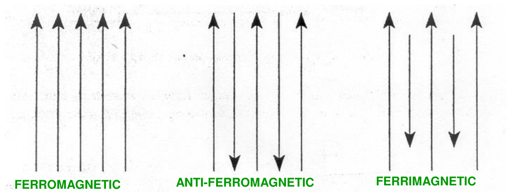
§ 5 Magnetic domains and Bloch walls [Session 15 Slides 14-15]
A magnetic domain is a three-dimensional region of a ferromagnetic or ferrimagnetic material with uniform magnetization. Because of the domains, a ferromagnetic or ferrimagnetic material that has never been exposed to a magnetic field has a null net magnetization [Session 15 Slide 14].
A Bloch wall is a narrow transition region at the boundary between magnetic domains, over which the magnetization changes progressively from its value in one domain to its value in the next. The sizes given on the slide are:
| Feature | Size |
|---|---|
| Domain | about 10 to 100 μm |
| Bloch wall | about 100 nm (approximately 300 atoms) |
The domains are usually smaller than the grains: a small grain can be a single domain, and a larger grain contains several. The slide shows the domain pattern of an iron (001) single crystal film.
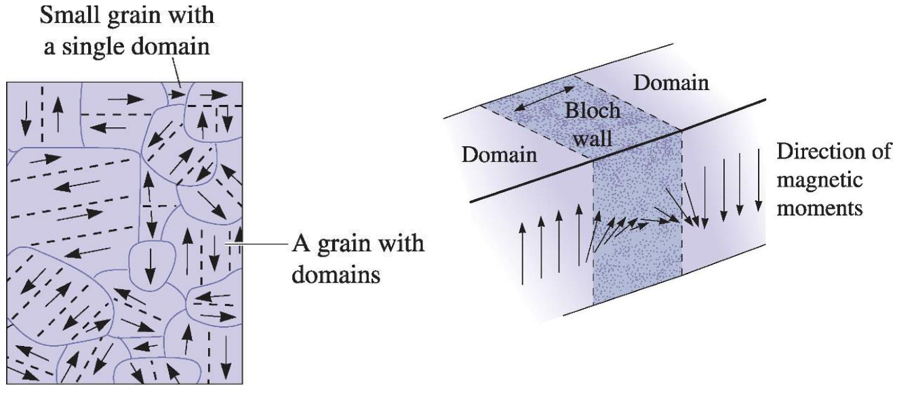
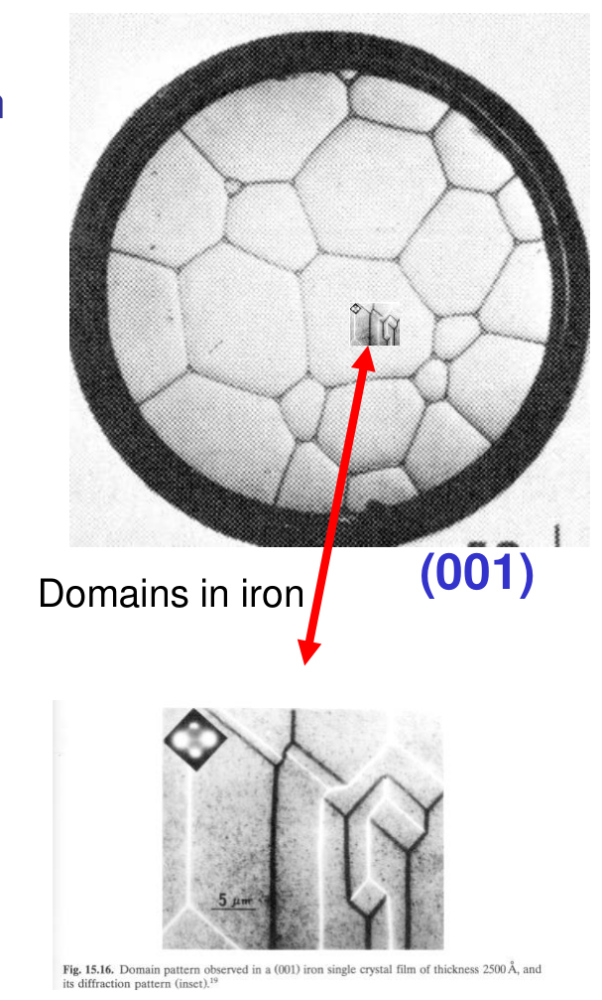
Slide 15 gives the reason for the domains: the magnetic domain structure is generated spontaneously to decrease the magnetostatic energy of the material. A single domain has a high magnetostatic energy (the stray field closes through the air around it); two domains have a lower one, four domains a lower one still, and the closure domains of the last panel have zero magnetostatic energy [Session 15 Slide 15].
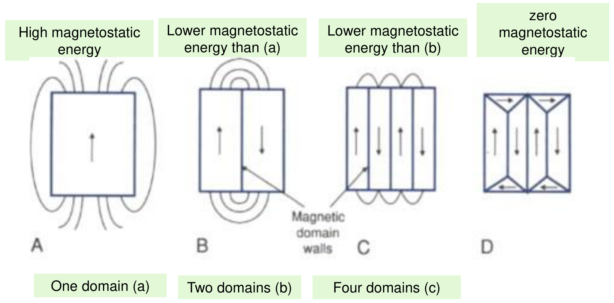
§ 6 Magnetization curve and permeability [Session 15 Slide 16]
When a magnetic field is applied to a magnetic material the magnetization increases slowly at first, then more rapidly as the domains begin to grow, and later it slows down because the domains must eventually rotate to reach saturation [Session 15 Slide 16]. The stages of the slide are:
- Random distribution of domains (demagnetized state, $H = 0$).
- Growth of the favourable domains and shrinkage of the unfavourable ones.
- More growth of the favourable domains.
- Rotation of domains towards the field direction.
- Saturation.
The two permeabilities of the slide are the slopes of the curve: $\mu_i$ is the initial permeability (slope at the start) and $\mu_{max}$ is the maximum permeability (the line from the origin tangent to the curve, that is, the largest value of $B/H$); the permeability varies with $H$. The slide's axis reads "magnetization $M$ or inductance $B$": strictly these slopes are permeabilities on the $B$ curve. The saturation magnetization $M_s$ is the magnetization that results when all the magnetic dipoles of the solid are aligned with the external field; the corresponding induction is the saturation flux density $B_s$.
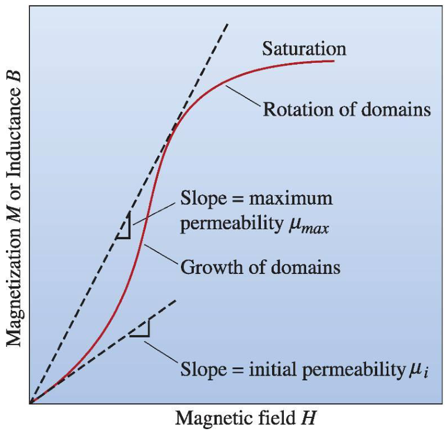
§ 7 Hysteresis cycles and applications [Session 15 Slides 17-19]
7.1 The hysteresis loop [Session 15 Slide 17]
The slide draws the loop with the domains at each point. When the field is reduced from saturation, the magnetization does not follow the initial curve back, because the domains do not return to their random arrangement (the author's reading of the sketches). The loop of $B$ against $H$ defines two quantities:
- $B_r$ is the remanence: the induction that remains when the field is brought back to zero.
- $H_c$ is the coercivity: the reverse field needed to bring the induction to zero. It is a measure of the opposition to a change in orientation of the dipoles: the slide writes it as 1/(how easy it is to change the orientation of the dipoles).
7.2 Soft and hard magnetic materials [Session 15 Slide 18]
The materials are classified by the shape of their loop, with the limit $H_c = 10\,000$ A/m [Session 15 Slide 18]:
| Soft magnetic materials | Hard magnetic materials | |
|---|---|---|
| Bloch walls | easy to move | difficult to move |
| Properties | high initial permeability, low $H_c$ | high remanence, high $B_s$ and $H_c$, low $\mu_i$ |
| Use | materials under alternating fields, to increase $B$ and produce fast flux changes in coils and circuits with minimum energy losses | permanent magnets, because of their high resistance to demagnetization |
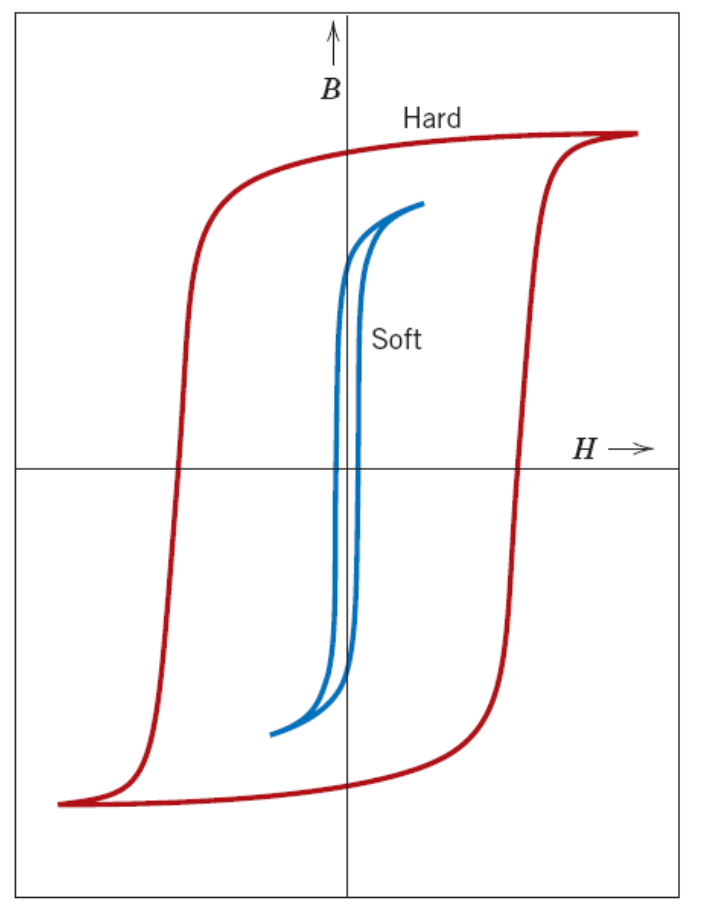
Slide 18 lists a high $B_s$ for the hard materials, and Slide 19 asks for a high saturation magnetization in the soft ones. The data favour the soft side: on the chart of Slide 19 CoFe and Fe reach about 2 T or more against about 1.5 T for NdFeB, and on Slide 24 soft $B_{max}$ goes up to 2.30 T against 1.23 T for the best hard $\mu_0 M_r$. Both statements are kept as printed; the loops above are the ones of Slide 18.
7.3 Applications [Session 15 Slide 19]
The slide matches each type of loop with its use [Session 15 Slide 19]:
- Permanent magnets: hard magnetic materials, with high resistance to demagnetization (high remanence, high coercive field).
- Materials under alternating electrical fields (cores of electromagnets, transformers, generators and electric motors, to increase the magnetic flux in coils and circuits): soft magnetic materials, to minimize energy losses, with high saturation magnetization, small coercive field and high permeability.
- Magnetic memories in computers, magnetic amplifiers and pulse transformers (data storage): materials with a rectangular hysteresis loop, with low remanence, low saturation magnetization and low coercive field (soft magnetic materials modified by a thermal treatment in the presence of a magnetic field).
The slide also plots the saturation magnetization against the coercivity of many materials, from the soft ferrites and iron alloys at low coercivity to the hard ferrites and rare-earth magnets at about $10^5$ A/m and above, with the regions labelled soft, semihard and hard. A second figure compares three loops: the soft magnet for electrical applications, the hard magnet for permanent magnets and the square loop for computer applications.
Slide 19 prints "low remanance" for the rectangular loop. A rectangular loop has $B_r$ close to $B_s$, so "low" can only mean low in absolute value, not low relative to $B_s$. The recording powders of Slide 24 also have $H_c$ of 22 to 240 kA/m, above the 10 kA/m limit of soft materials, so the slide's description does not fit them.
§ 8 Factors that control the hysteresis cycle [Session 15 Slides 20-22]
The shape of the loop depends on [Session 15 Slide 20]:
- The material's composition: the number and intensity of its dipoles, and the type of magnetism of the material.
- Processing: its microstructure (grain size, pores, impurities, etc.) and the presence of strains due to mechanical deformations.
- Working conditions: working temperature, radiation and electrical currents.
The coercivity is a strongly microstructure-dependent property (crystallographic direction, grain boundaries, pores, shape of the particles), while the saturation magnetization is constant for a material of a given composition (at a given temperature, as the next paragraph shows).
Microstructure [Session 15 Slide 21]. The Bloch walls move more easily in larger grains, and obstacles stop them:
| Change | Effect on the Bloch walls | Effect on the loop |
|---|---|---|
| Larger grain size | mobility increases | $\mu$ increases, $H_c$ and $B_r$ decrease |
| More inclusions, dislocations, pores, etc. | mobility decreases (a particle pins the wall) | $\mu$ decreases, $H_c$ and $B_r$ increase |
Temperature [Session 15 Slide 22]. When the temperature rises the mobility of the dipoles rises. The maximum alignment reached when the field is applied is lower, so $M_s$ is reduced, and it is harder to keep the dipoles aligned when the field disappears, so $B_r$ and $H_c$ are reduced (the loop shrinks, as in the slide's figure for low, moderate and high temperature). When $T > T_c$ the dipoles can still align with $H$, but when $H$ disappears their alignments become random, and the material becomes paramagnetic.
§ 9 Curie and Néel temperatures, typical properties [Session 15 Slides 23-24]
Thermal agitation tends to misalign the dipoles [Session 15 Slide 23].
- The Curie temperature $T_c$ is the temperature at which the saturation magnetization abruptly falls to 0. For $T > T_c$ ferromagnetic and ferrimagnetic materials become paramagnetic.
- The Néel temperature is the temperature at which an antiferromagnetic material becomes paramagnetic: the thermal energy becomes large enough to destroy the macroscopic magnetic ordering of the material.
| Ferromagnetic material | Fe | Co | Ni | Gd |
|---|---|---|---|---|
| $T_c$ in K | 1043 | 1404 | 631 | 289 |
| Antiferromagnetic material | α-Mn | MnO | Cr | NiO |
|---|---|---|---|---|
| Néel temperature in K | 100 | 116 | 310 | 523 |
The slide plots the saturation magnetization of pure iron and of magnetite against the temperature: both fall to zero, iron at about 770 °C (1043 K) and Fe₃O₄ at about 580 °C.
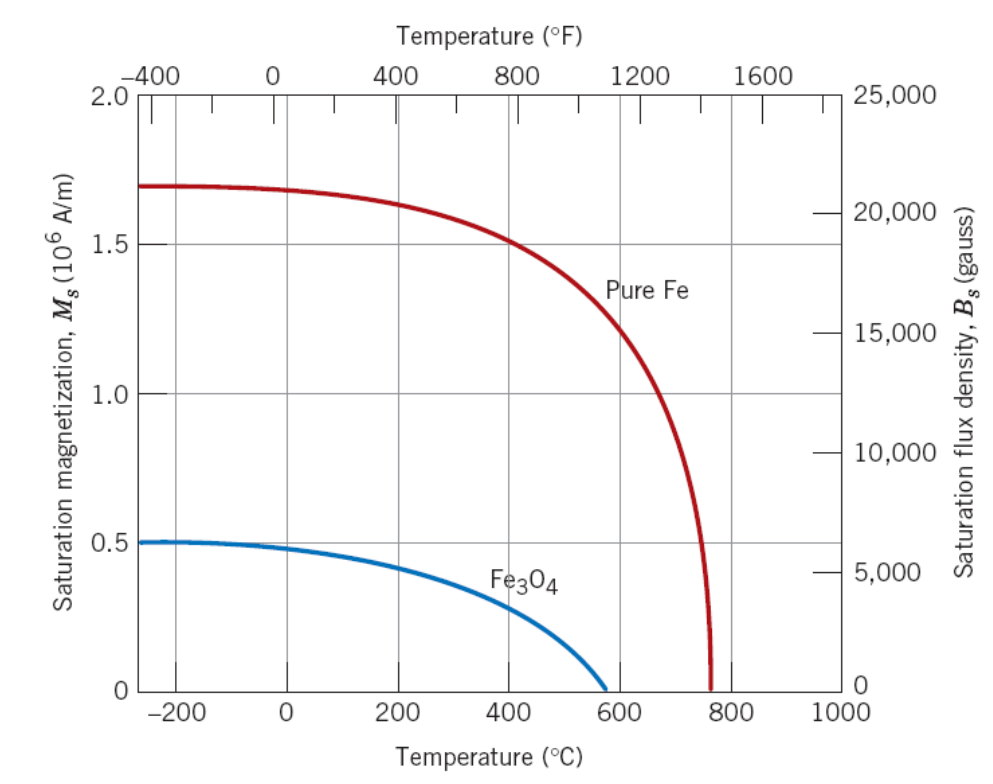
Slide 24 reproduces three tables of typical properties: selected soft magnetic materials (initial and maximum relative permeability, coercivity $H_c$, retentivity $B_r$, $B_{max}$ and resistivity: ingot iron, low-carbon steel, Fe-Si alloys, Fe-Ni alloys, Supermendur, metallic glasses, MnZn and NiZn ferrites), selected hard (permanent) magnetic materials (Fe-Co, Alnico-5, barium ferrite, SmCo₅, Nd₂Fe₁₄B, with $\mu_0 M_r$, $\mu_0 H_c$ and $(BH)_{max}$) and typical magnetic recording powders.
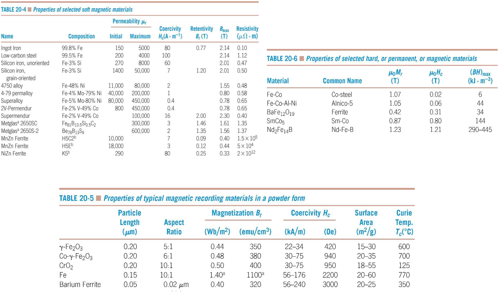
§ 10 Superconductivity and magnetism [Session 15 Slides 25-32]
10.1 Zero resistivity and critical temperature [Session 15 Slide 25]
The electrical resistivity of a superconductor becomes zero below some critical temperature $T_c$. Superconductors can be pure metals and alloys, ceramics (typically with copper oxide) and organic compounds (based, for example, on Se or S). $T_c$ ranges between 0.01 and 165 K (the text of the slide; its chart marks 163 K), which is the practical limitation, and it is usually lower for metals than for ceramics. This $T_c$ is the critical temperature of a superconductor, not the Curie temperature of Section 9, and likewise $H_c$ below is the critical field, not the coercivity. The slide gives the critical temperatures (read from the slide):
| Material | $T_c$ in K | Material | $T_c$ in K |
|---|---|---|---|
| Al | 1.20 | Nb₃Sn | 18.05 |
| Hg | 4.15 | Nb₃Al | 17.5 |
| Mo | 0.92 | V₃Ga | 16.5 |
| Nb | 9.26 | La₃In | 10.4 |
| Pb | 7.19 | LaBaCuO | 35 |
| Ta | 4.48 | YBCO | 90 |
| Ti | 0.39 | Tl₂Ba₂Ca₂Cu₃O₁₀ | 125 |
| Zn | 0.88 | Hg₁₂Tl₃Ba₃₀Ca₃₀Cu₄₅O₁₂₅ | 138 |
The slide also plots the resistivity against the temperature (the superconductor drops to zero at $T_c$, the normal metal tends to a residual value) and the history of the record $T_c$: the discovery of superconductivity (1911), the heavy-fermion superconductors (1979), the high-$T_c$ cuprates (1986) and the iron-based high-$T_c$ superconductors (2006).
10.2 Critical field and critical current density [Session 15 Slide 26]
At temperatures below $T_c$ the superconducting state stops when a sufficiently large magnetic field ($H_c$) or current density ($J_c$) is applied, and $H_c$ and $J_c$ decrease with increasing temperature. The superconducting envelope is the surface in the $(T, H, J)$ space that bounds the superconducting state; the slide shows it for Nb₃Sn, with $B_{c2} = 24.5$ T, $T_c = 18$ K and $J_c = 10^7$ A/cm² ($= 10^{11}$ A/m²).
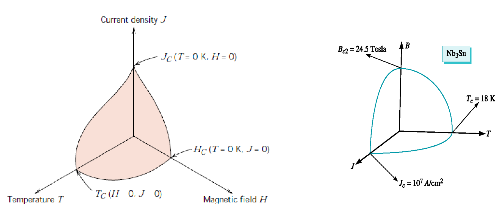
10.3 Meissner effect and levitation [Session 15 Slide 27]
The Meissner-Ochsenfeld effect is the expulsion of the magnetic field from a material when it is in the superconducting state. Above $T_c$ the field lines go through the material; below $T_c$ they are pushed around it, and the material becomes diamagnetic. Superconductors in the Meissner state exhibit perfect diamagnetism (superdiamagnetism): the total magnetic field is very close to zero deep inside. A permanent magnet levitates above a superconductor cooled by liquid nitrogen: the slide's drawing shows the repulsion of the Meissner effect, an attraction from the trapped magnetic flux, and gravity [Session 15 Slide 27].
Slide 27 writes "semiconductor state" and "Oschsenfeld". The effect belongs to the superconducting state, and the name is Meissner-Ochsenfeld.
10.4 Type I and Type II superconductors [Session 15 Slides 28-29]
- Type I (soft superconductors): sharp transition to the normal state, at a very low $H_c$, so they have low practical interest. They are pure metals: Sn, Al, Pb and Hg [Session 15 Slide 28].
- Type II (hard superconductors): gradual transition to the normal state as $H$ grows. The lowest critical field $H_{c1}$ can be 100 times lower than the highest critical field $H_{c2}$, and they have a high resistance against the destruction of superconductivity by magnetic fields. They are alloys (Nb-Zr, Nb-Ti), intermetallics (Nb₃Sn) and ceramics (YBaCuO). The flux lines begin to penetrate the material at $H_{c1}$, and at $H_{c2}$ the penetration is complete; for fields between the two the material is in a mixed state, with normal and superconducting regions [Session 15 Slide 29].
Slides 28 and 29 write "Type I semiconductors" and "Type II semiconductors" for the lists of materials. They are superconductors.
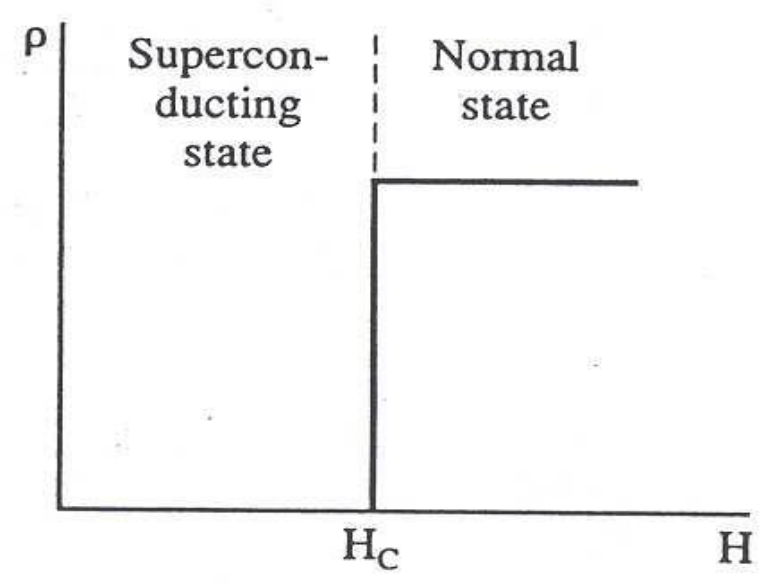
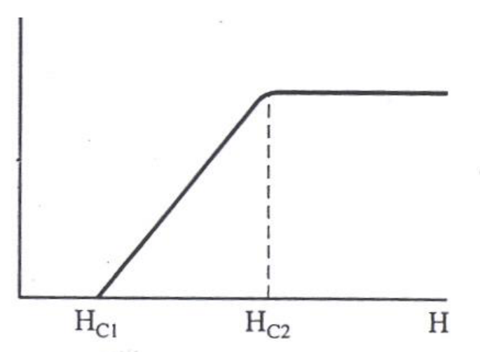
10.5 Josephson effect and applications [Session 15 Slides 31-32]
The Josephson or tunnel effect occurs when a current flows through two superconductors separated by a very thin insulating layer, the tunnel junction (an oxide layer of about 3 nm) [Session 15 Slide 31]. The Josephson current goes through the junction even though there is no potential difference; a d.c. voltage applied through the junction causes a radio-frequency current oscillation (and an RF voltage causes a d.c. current); and its value is very sensitive to the magnetic field. It has many applications.
The applications of superconductors on Slide 32 are levitated transport, the powerful superconducting electromagnets of magnetic resonance imaging (MRI), RF and microwave filters (for mobile-phone base stations and for military receivers), the Large Hadron Collider and other particle accelerators, and very low-loss filters based on ceramic superconductors for wireless communications [Session 15 Slide 32].
Videos linked in the slides
These are references printed on the slides, not content of the portal:
- Session 15, Slide 7 (diamagnetism, "The frog incident"): https://www.youtube.com/watch?v=A1vyB-O5i6E&ab_channel=GrahamRumplestiltskinMcLeod
- Session 15, Slide 30 (superconductivity and magnetism): https://www.youtube.com/shorts/Bo8WV032dyk
Part II — Thermal Properties (Session 15, Slides 33–48)
§ 11 Thermal properties: agenda and overview [Session 15 Slide 33]
Slide 33 is the title and the agenda of the thermal part: introduction, heat capacity and specific heat, thermal expansion, thermal conductivity and thermal shock. Its pictures show a thermocouple, a pan (thermal conductivity), a clinical thermometer and the thermal insulation of the space shuttle (thermal insulator).
§ 12 Heat capacity and specific heat [Session 15 Slides 34-35]
12.1 Definitions and phonons [Session 15 Slide 34]
Thermal energy in solids is the increase in the vibrational energy of the atoms, and the vibrations produce travelling lattice waves. A phonon is a packet of elastic waves (thermal vibrational energy), with energy
where $h$ is Planck's constant, $v$ the speed of sound, $\lambda$ the wavelength and $\omega$ the frequency, as printed.
On the slide $\omega$ is the ordinary frequency $v/\lambda$. With the usual angular frequency $\omega = 2\pi v/\lambda$ the same energy is written $\hbar\omega$, with $\hbar = h/2\pi$ (extension).
The heat capacity is the energy required to raise the temperature of one mole of a material by one degree (the ability of the material to absorb heat):
with $C$ in J/(mol·K) (or cal/(mol·K)) and $dQ$ the energy required to produce a temperature change $dT$. The specific heat is the energy required to raise the temperature of one gram of a material by one degree; the slide writes it as the heat capacity divided by the atomic weight:
12.2 Dependence on temperature [Session 15 Slide 35]
The heat capacity increases with temperature, because the lattice waves can increase their average energy. Above the Debye temperature $\theta_D$ the heat capacity becomes independent of temperature, with the approximate value
with $R$ the gas constant. In SI units, $3R = 3\times8.314 = 24.9$ J/(mol·K) (the conversion is an extension, with 1 cal = 4.184 J, and it gives 25.1 J/(mol·K) for 6 cal/(mol·K)). The limit of $3R$ per mole is known as the Dulong-Petit value (the name is an extension).
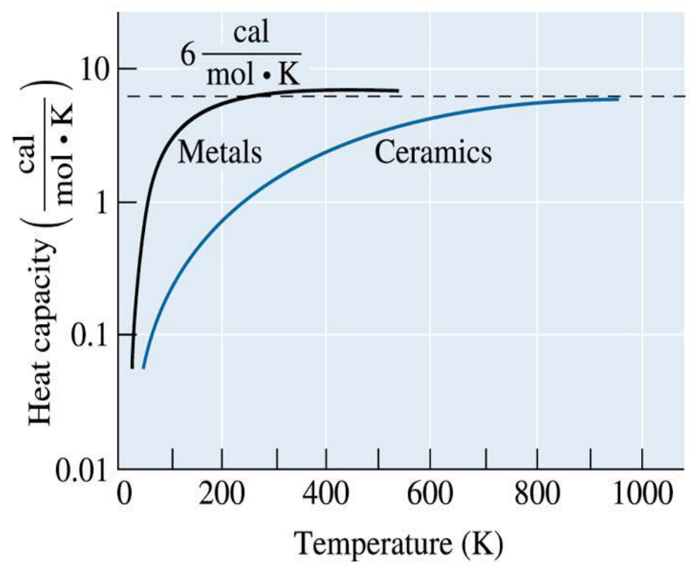
In the chart the metals reach the plateau at a lower temperature than the ceramics.
The heat capacity and the specific heat of most materials do not depend significantly on the structure of the material (dislocations, vacancies, grain size). The exception is the ferromagnetic materials, such as iron, which show a high specific heat at the Curie temperature (the change from ferromagnetic to paramagnetic) [Session 15 Slide 35].
§ 13 Thermal expansion [Session 15 Slides 36-39]
13.1 Linear coefficient [Session 15 Slide 36]
The linear coefficient of thermal expansion $\alpha$ is the amount by which the unit length of a material changes when its temperature changes by one degree:
$\alpha$ is in °C⁻¹ (or K⁻¹, since only differences of temperature enter). Here $\Delta T = T_f - T_0$. For an isotropic solid (an extension, not printed on the slides), with $\varepsilon = \Delta l/l_0$, $V = l^3$ gives $\Delta V/V_0 = (1+\varepsilon)^3 - 1 = 3\varepsilon + 3\varepsilon^2 + \varepsilon^3 \approx 3\varepsilon$ for small $\varepsilon$, so the volume coefficient is $\alpha_v \approx 3\alpha$.
13.2 Atomic origin [Session 15 Slide 36]
The slide states that materials with a high bonding energy (strong atomic bonding) have low coefficients of thermal expansion, and plots the interatomic energy against the separation: when the material is heated, the vibration energy rises and the equilibrium spacing between the atoms increases; the increase is smaller for the deep, narrow well of strong bonding than for the shallow well of weak bonding (the same reading as in the note on interatomic potential energy curves).
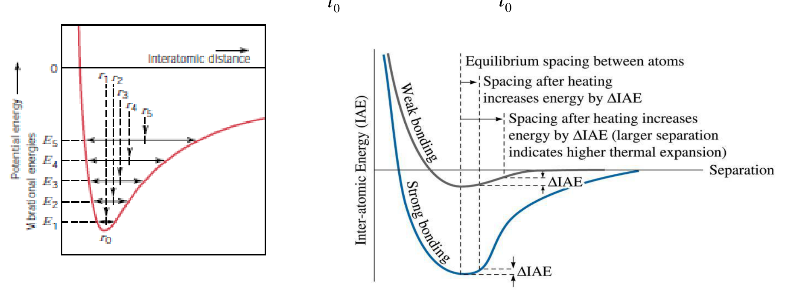
Why the spacing grows (extension). The reason is the asymmetry of the well. Near the minimum the curve is steeper on the compressed side (the repulsion grows fast) than on the stretched side. At a vibration energy $E$ the atom oscillates between a small and a large distance, and the mean of the two lies at a larger distance than $r_0$ and moves out as $E$ grows. A symmetric parabola, the harmonic approximation, would keep the mean distance at $r_0$ and give no thermal expansion at all.
13.3 Values and allotropic changes [Session 15 Slides 37-38]
The slide plots the coefficient of thermal expansion of iron against temperature: it changes abruptly at the temperatures where an allotropic transformation occurs (the $\alpha$, $\gamma$ and $\delta$ phases of the figure), and it plots the coefficient of the metals at 25 °C against their melting temperature: the higher the melting temperature (the stronger the bonding), the lower the coefficient. Allotropic materials have abrupt changes in their dimensions when phase transformations occur, which cracks refractories [Session 15 Slide 37].
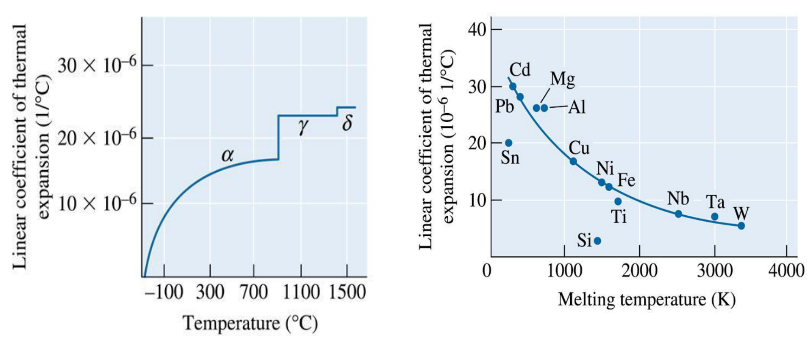
Slide 38 gives the specific heat $c_p$, the expansion coefficient $\alpha_l$ and the thermal conductivity $k$ of metals, ceramics and polymers, with the low-expansion alloys Invar (64Fe-36Ni, $\alpha_l = 1.6\times10^{-6}$ °C⁻¹) and Super Invar (63Fe-32Ni-5Co, $0.72\times10^{-6}$ °C⁻¹) boxed. For comparison: aluminium $23.6\times10^{-6}$, copper $17.0\times10^{-6}$, iron $11.8\times10^{-6}$, tungsten $4.5\times10^{-6}$, alumina $7.6\times10^{-6}$ and fused silica $0.4\times10^{-6}$ °C⁻¹, and $106$ to $198\times10^{-6}$ °C⁻¹ for high-density polyethylene.
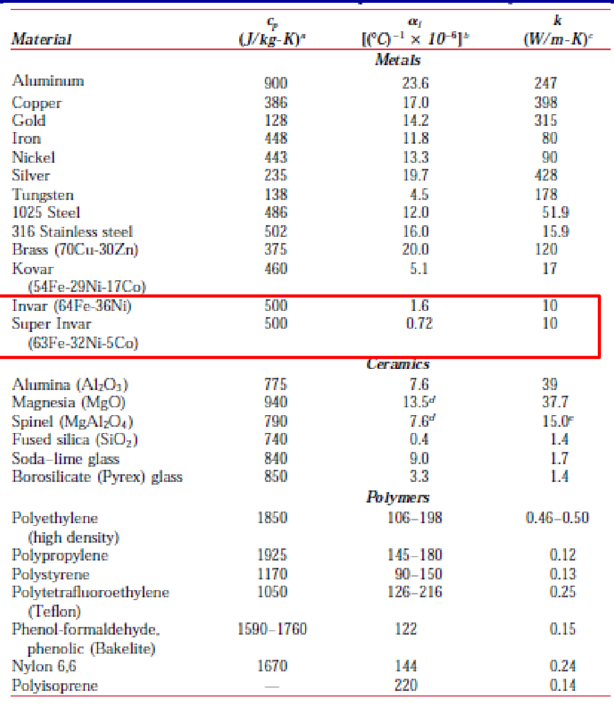
13.4 Bimetals [Session 15 Slide 39]
A bimetal is made of two metals bonded together with different expansion coefficients. A bimetallic strip converts a temperature change into a mechanical displacement: on heating, the metal with the larger coefficient lengthens more and the strip bends towards the other metal (the slide shows copper and iron). Uses: thermostats, thermometers, clocks and electrical devices [Session 15 Slide 39].
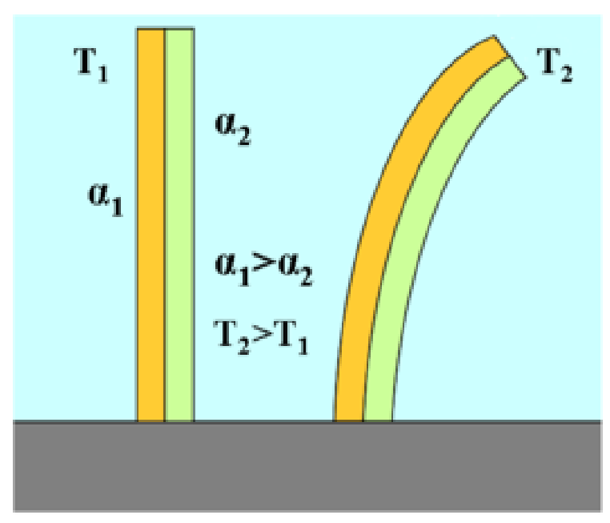
§ 14 Thermal conductivity [Session 15 Slides 40-44]
14.1 Fourier's law [Session 15 Slide 40]
The thermal conductivity is a microstructure-sensitive property that measures the rate at which heat is transferred through a material. When one end of a bar is heated, a heat flux $Q/A$ flows towards the cold end at a rate set by the temperature gradient in the bar:
$q$ is the heat flux per unit area in W/m², $Q$ the heat flow in W (the slide calls it heat flux), $k$ the thermal conductivity in W/(m·K) and $\Delta T/\Delta x$ the temperature gradient. The minus sign says that heat flows from hot to cold. This is the same structure as the steady-state diffusion law of the note on Fick's first law: a flux proportional to a gradient, with a transport coefficient ($k$ here, $D$ there); that parallel is an extension.
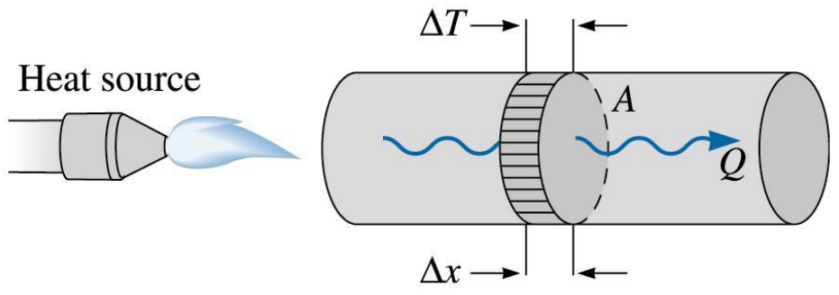
The thermal energy is transferred by two mechanisms: the transfer of free electrons ($k_e$) and the lattice vibrations or phonons ($k_{ph}$):
In conductive materials the transfer is by free electrons, $k \approx k_e$; in insulating materials it is by phonons, $k \approx k_{ph}$.
14.2 Link with the electrical conductivity [Session 15 Slide 41]
The slide gives the relation between the thermal and the electrical conductivity (the Wiedemann-Franz law, a name that is an extension):
where $L$ is the Lorenz number (a constant), $L = 2.44\times10^{-8}$ W·Ω/K² (or $5.5\times10^{-9}$ cal·Ω/(s·K²)); the slide calls it the Lorentz number. The units are consistent: $k/(\sigma T)$ is $[\text{W}/(\text{m}\cdot\text{K})]/[(\Omega\cdot\text{m})^{-1}\cdot\text{K}] = \text{W}\cdot\Omega/\text{K}^2$. The slide also gives a table of the thermal conductivity of pure metals, alloys, ceramics and polymers (1 cal/(cm·s·K) = 418.4 W/(m·K)).
The two values of the slide are not the same number: with 1 cal = 4.184 J, $2.44\times10^{-8}$ W·Ω/K² is $5.83\times10^{-9}$ cal·Ω/(s·K²), not $5.5\times10^{-9}$ (a difference of about 6 %). Both are kept as printed; the SI value is the one used on this page.
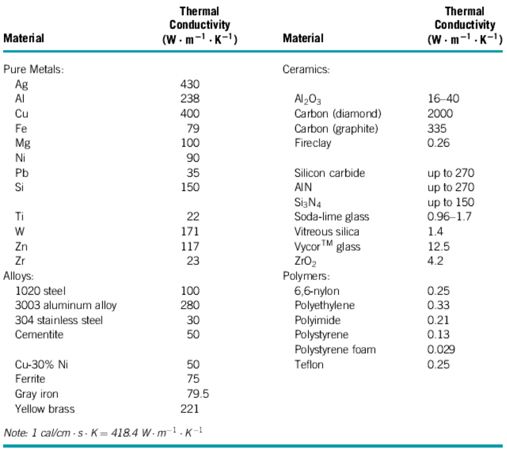
Some values of this table contradict Slides 38 and 43, where alloying lowers $k$: the 3003 aluminium alloy (280) is above pure Al (238 here, 247 on Slide 38), the 1020 steel (100) is above pure Fe (79) and against 51.9 for the 1025 steel of Slide 38, and yellow brass (221) stands against 120 for 70Cu-30Zn on Slide 38. The values are kept as printed; use them with care.
14.3 Effect of temperature [Session 15 Slide 42]
For the metals, two effects compete. A higher temperature increases the contribution of the lattice vibrations $k_{ph}$, so the thermal conductivity increases; and it decreases the electron mobility (more scattering of the electrons), so the thermal conductivity decreases. The chart of the slide shows platinum, aluminium, iron, SiC, Al₂O₃, glass and a firebrick with porosity.
Two remarks on the chart are extensions. The Wiedemann-Franz law gives $k_e = L\sigma T$, and since $\sigma$ of a metal falls roughly as $1/T$, $k_e$ stays nearly constant, which fits the flat curve of aluminium. And the phonon conductors SiC and Al₂O₃ fall with temperature on the chart, so the statement of the slide that $k_{ph}$ grows with $T$ does not hold for every material.
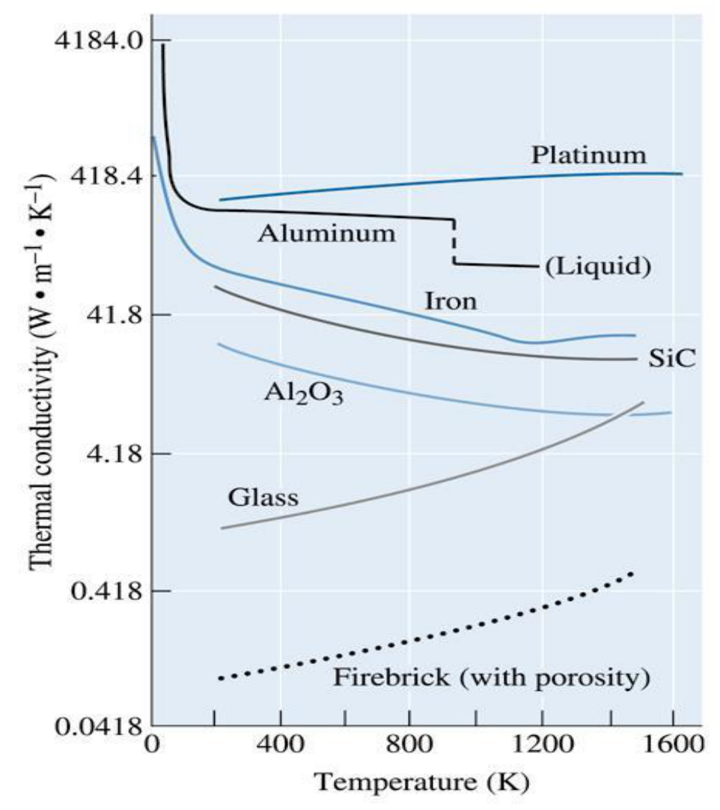
14.4 Effect of defects [Session 15 Slide 43]
Alloying, defects and porosity reduce the thermal conductivity, because they scatter electrons and phonons. The slide shows the drop of the thermal conductivity of copper as zinc is added (Cu-Zn), three lattice drawings with impurity atoms and a vacancy, and the pores of a ceramic (micrograph of the porosity).
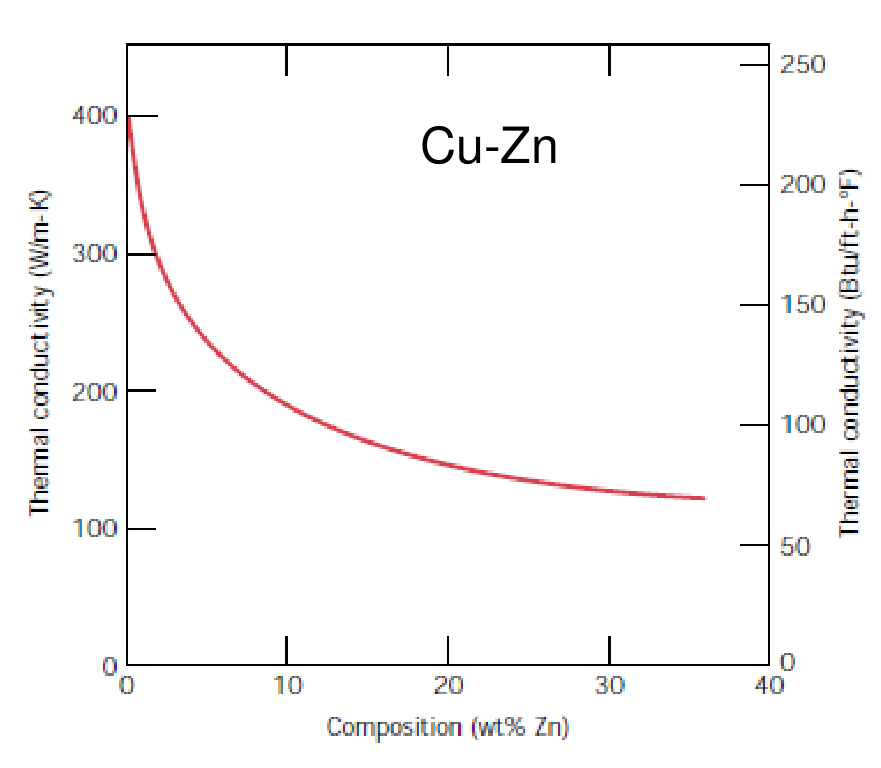
14.5 Thermocouples [Session 15 Slide 44]
A thermocouple is a temperature-measuring device made of two dissimilar conductors that contact each other at one or more spots. It produces a voltage when the temperature of one of the spots differs from the reference temperature of the other parts of the circuit. The slide shows a junction at 300 °C that gives 12.2 mV.
The slide labels the two conductors Ni-Cr and Al-Cr. The second label is kept as printed; the usual pair for this combination is Ni-Cr against Ni-Al (extension).
§ 15 Thermal stresses in constrained bodies [Session 15 Slides 45-46]
Thermal stresses are the stresses introduced into a material by differences in the amount of expansion or contraction that occur because of a temperature change. In confined materials they result from restrained thermal expansion or contraction [Session 15 Slide 45]:
where $E$ is Young's modulus (MPa), $\alpha$ the linear coefficient of thermal expansion (°C⁻¹) and $\sigma$ the thermal stress (MPa). The slide calls $\Delta T$ the thermal gradient; in this expression it stands for $T_0 - T_f$, the initial minus the final temperature, which is the opposite sign of the $\Delta T = T_f - T_0$ of Section 13. The slide states the signs:
- Heating, $T_f > T_0$: the stress is compressive ($\sigma < 0$).
- Cooling, $T_f < T_0$: the stress is tensile ($\sigma > 0$).
The origin is the free expansion that the walls prevent (this link with Hooke's law is an extension). A free bar would have the thermal strain $\alpha(T_f - T_0)$. Held at constant length, the total strain is zero, $0 = \sigma/E + \alpha(T_f - T_0)$, and therefore $\sigma = E\alpha(T_0 - T_f)$. Dimensionally $[E\alpha\Delta T] = \text{MPa}\cdot{}^{\circ}\text{C}^{-1}\cdot{}^{\circ}\text{C} = \text{MPa}$.
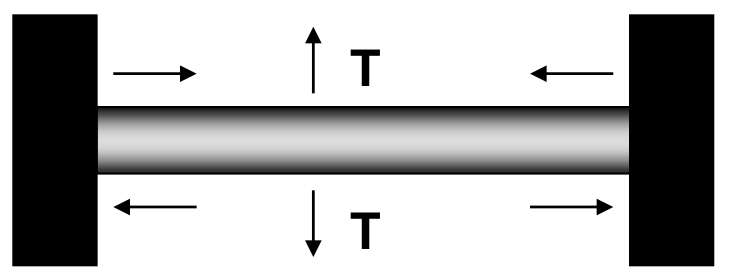
Slide 46 ("Problem 5. Topic Mechanical properties") applies the law to problem 5 of the Topic 5 sheet. A steel wire, initially 1 m long, is stretched by a force of 1400 N at 20 °C. After the force is applied the wire is held at constant length and heated to 40 °C, and the diameter is asked for that makes the thermal expansion stress compensate the applied stress. With the data of the sheet ($E = 207$ GPa, $\alpha_l = 12.5\times10^{-6}$ °C⁻¹) the magnitude of the thermal stress is $E\alpha_l\lvert T_f - T_0\rvert = 51.75$ MPa (compressive, because the wire is heated), the area is $A = F/\sigma = 1400\ \text{N}/51.75\ \text{N/mm}^2 = 27.053\ \text{mm}^2$ and the diameter is $d = \sqrt{4A/\pi} = 5.87$ mm (5.869 mm; the official key prints 5.86 mm). The full step-by-step solution, with the check against the official key, is in Problem T5-05.
On the rendered slide the box under the statement is empty, so the data of the sheet are used here. The PDF does keep a solution in its hidden text layer, with slips: it prints $\alpha = 12.5\times10^{-3}$ °C⁻¹ although its 51.75 MPa needs $12.5\times10^{-6}$, it writes the area in mm, and it rounds $r$ to 2.93 mm before doubling it, which is where the 5.86 mm comes from.
§ 16 Thermal shock [Session 15 Slides 47-48]
16.1 Temperature gradients [Session 15 Slide 47]
Thermal stresses also appear without any external constraint when a body has a temperature gradient, caused by rapid heating or cooling, because the outside temperature changes more rapidly than the interior [Session 15 Slide 47]:
- Rapid heating: the exterior is hotter and expands, so it is under compressive surface stresses and tensile interior stresses.
- Rapid cooling: the exterior contracts, so it is under tensile surface stresses and compressive interior stresses.
16.2 Thermal shock resistance [Session 15 Slide 48]
Thermal shock is the failure of a material caused by stresses introduced by sudden changes in temperature, and it is typical of brittle materials. The thermal shock resistance of the slide is
with $\sigma_f$ the fracture stress, $k$ the thermal conductivity, $E$ the modulus of elasticity and $\alpha_l$ the linear coefficient of thermal expansion [Session 15 Slide 48]. The factors that raise the resistance, as listed on the slide:
| Factor | Change | Effect on the thermal shock resistance |
|---|---|---|
| Coefficient of thermal expansion $\alpha_l$ | lower | higher |
| Thermal conductivity $k$ | higher | higher |
| Modulus of elasticity $E$ | lower | higher |
| Fracture stress $\sigma_f$ | higher | higher |
| Phase transformations | dimensional changes | thermal shock is worse |
The formula reproduces these four trends: a low $\alpha_l$ and a low $E$ make the thermal stress $E\alpha_l\Delta T$ small, and a high $k$ evens out the temperature so the gradient is small, while a high $\sigma_f$ raises the stress the material can stand. The units of $\sigma_f k/(E\alpha_l)$ are W/m (the unit check is an extension).
§ 17 Collected formulas of the topic
Everything below is taken from the sections above; it is a quick reference, not new content.
| Quantity | Formula | Where |
|---|---|---|
| Induction and permeability | $B = \mu H = \mu_0 H + \mu_0 M$, $\ \mu_r = \mu/\mu_0$ | Section 3 |
| Susceptibility | $M = \chi_m H$, $\ \mu_r = 1 + \chi_m$ | Section 3 |
| Bohr magneton | $\mu_B = 9.27\times10^{-24}$ A·m² | Section 2 |
| Hysteresis limit between soft and hard | $H_c = 10\,000$ A/m | Section 7 |
| Heat capacity | $C = dQ/dT$, $\ C \approx 3R$ above $\theta_D$ | Section 12 |
| Thermal expansion | $\Delta l/l_0 = \alpha\,\Delta T$, with $\Delta T = T_f - T_0$ | Section 13 |
| Fourier's law | $q = Q/A = -k\,\Delta T/\Delta x$, $\ k = k_e + k_{ph}$ | Section 14 |
| Wiedemann-Franz law (name: extension) | $L = k/(\sigma T)$, $\ L = 2.44\times10^{-8}$ W·Ω/K² | Section 14 |
| Thermal stress | $\sigma = E\alpha(T_0 - T_f) = E\alpha\Delta T$, with $\Delta T = T_0 - T_f$ | Section 15 |
| Thermal shock resistance | $TSR = \sigma_f k/(E\alpha_l)$ | Section 16 |